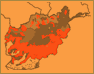

 Pashtuns
In the minority in the North, Pashtuns sustain their traditional culture
in many ways, including song. One fascinating form unique to this people
is the landai (also spelled lundai or landey in English), whose form
is described this way by the Pashto writer Saduddin Shpoon:ìa non-rhymed
two-lined catalectic verse with five anapestic paeon feet, two in the
first line and three in the second, ending in MA or NA.î This pithy
poem reminds one of the Japanese haiku in its brevity and punch. Here
are two typical landai poems as translated by Shpoon:
Golaab che pre she bea raa shin she Zzre che Zakhmi she tol wojood
wer sara mrina
You cut a flower, and another grows, as red, as tender as the first.
This is not the way with hearts.
Pe loyo ghro de Khudaay nazar dai Pe sar-ye waawre warawi chaaper
goloona
God has an affair [literally: an eye] with lofty mountains; With snow
he caps them, and around them plants flowers.
Particularly among the nomadic Pashtuns, or kuchi, Shpoon estimates
that the overwhelming majority of the landai poems are composed by women,
who traditionally worked alongside men, unveiled.
One of my closest collaborators in trying to understand the music of
the North was Baba Naim, a Pashtun from Badakhshan, in the far-off mountains.
He came to Kabul, invited to join the Radio Afghanistan orchestra, where
he played the northern fiddle called ghichak.
He built a specially beautiful instrument with mother of pearl, sheep-bone,
and camel-bone inlay, and arranged to have one made for me, the only
examples of this type of instrument. Normally, the ghichak is made from
a standardized, multicolored spike with pegs, built in the crossroads
city of Tashqurghan, to which you only need to add wire strings, a wooden
bridge, and a nail as a prop to rest it on.
Baba Naim played regularly in the Spinzar Hotel in downtown Kabul for
foreign visitors, so appeared on a number of early recordings of Afghan
music in the 1960s and 1970s. I enjoyed his discourses on musical style
and tapped his broad repertoire, including a set of landai songs he
offered me. They are personal and unconventional, in terms of mainstream
Pashtun practice, showing influence from Badakkhshani practice, and
are very beautiful as sung to his plaintive ghichak.
By contrast, I taped some mainstream, southwestern Afghan music on
a short trip to Girishk and Lashkar Gah, beyond the largest Pashtun
city, Kandahar. One lively number they allowed me to tape was a song
for attan dancing, a pastime of Pashtun men. There are many variants
of the attan; estimates go up to thirty. Most of them share the common
feature of ring formation, in which all the men revolve in ever-increasing
agitation, hair flying to the rhythm. The tempo picks up until the last
man sinks to the ground in exhaustion. This recording, made indoors,
conveys only a fraction of the excitement that marks the attan, especially
since it happens at celebrations such as weddings, often prompting an
impromptu burst of enthusiastic gunfire as accompaniment. The text,
like many folksongs, references a particular locale, as translated by
Mr. Jehani, now working at the Voice of America in Washington, DC:
The girls of Spairwan (a village southwest of Kandahar) are dancing.
Their food is the green, sweet grapes, and the morning breeze touches
and caresses them. Beautiful girls who wear sandals, you drove the boys
crazy, So the other people cannot work and earn their livelihood.
|